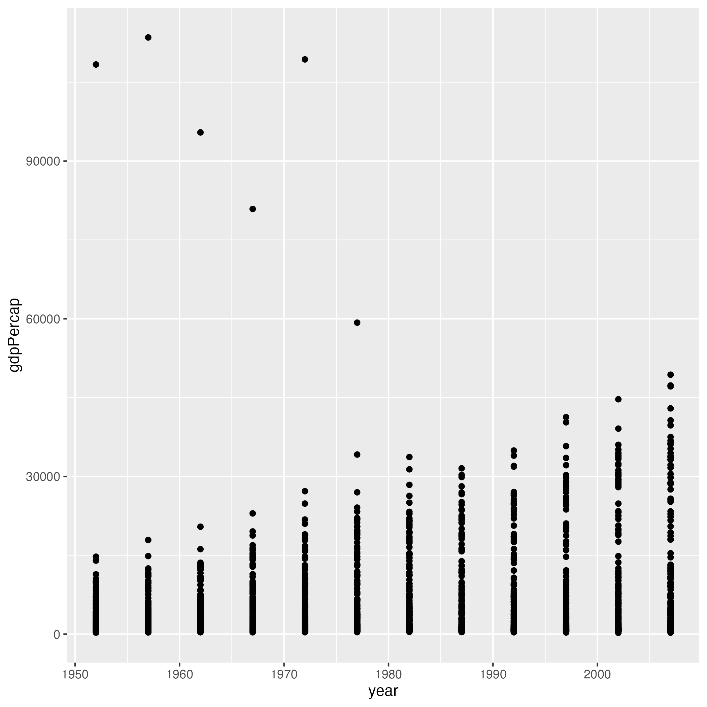
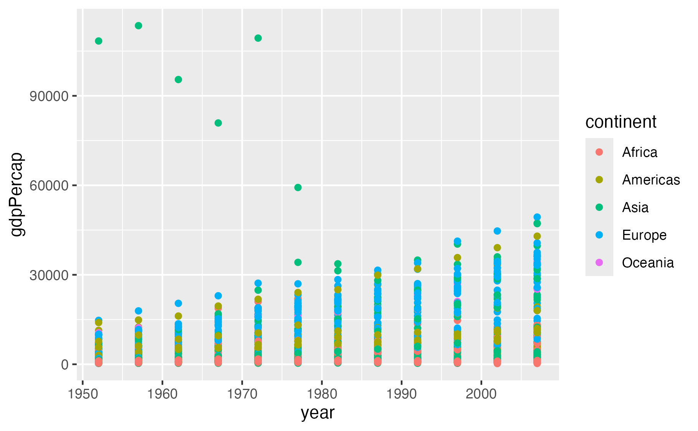
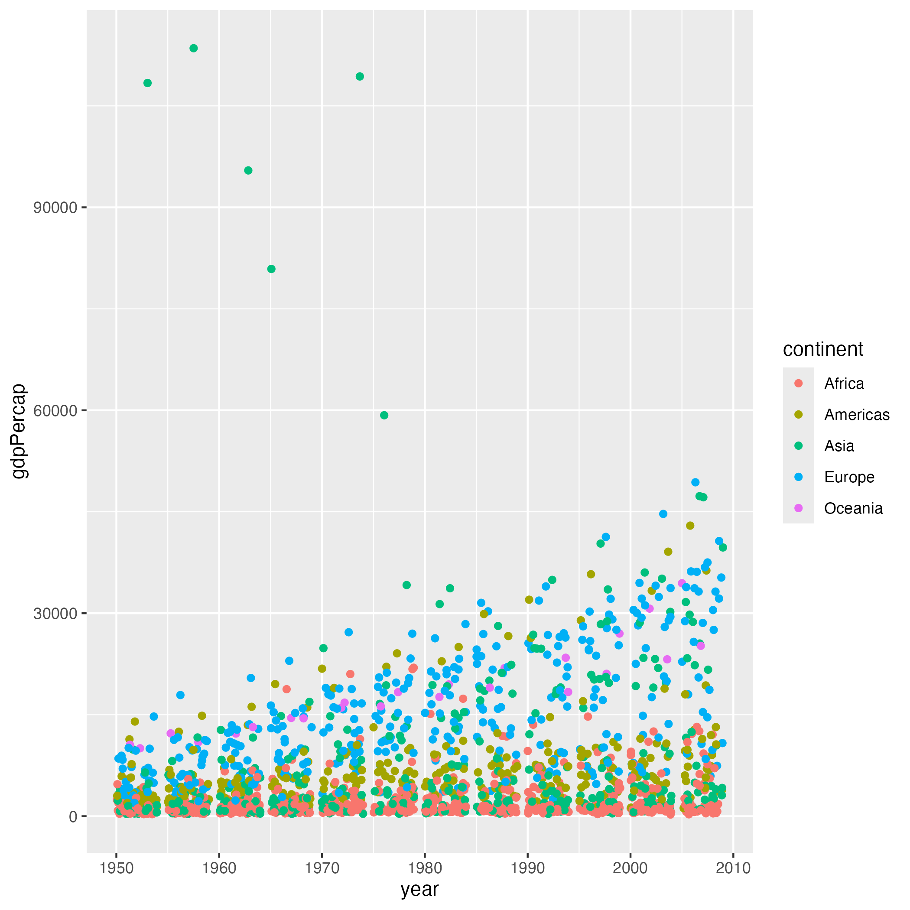
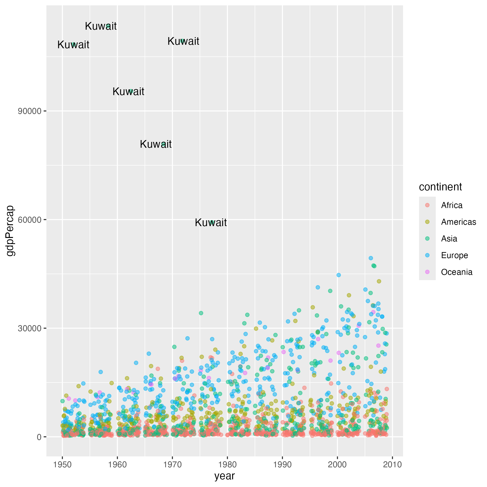
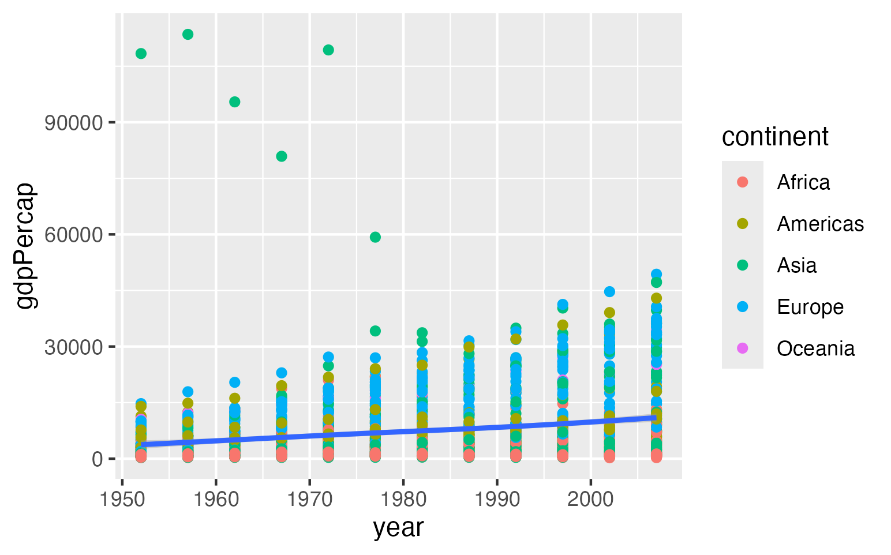
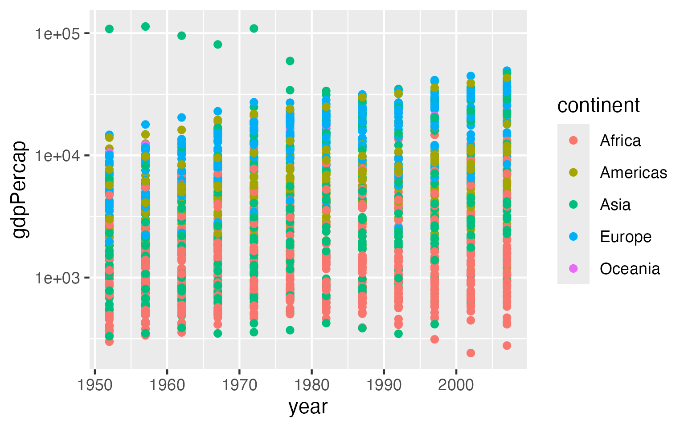

Writing Effective AI Prompts
Last updated on 2026-09-07 | Edit this page
Overview
Questions
- What should I include in a prompt?
- How does context affect responses?
- How can AI help me understand code?
- How can AI help me write code?
Objectives
- Practice interacting with an AI chatbot
- Use ggplot2 to plot data
- Explain why follow-up questions are essential to learning
Note: some of the material in this episode was drafted with assistance from generative AI tools. All content was reviewed and approved for inclusion by at least one human.
Starting A Conversation
An Unpredictable World
Most computer programs are deterministic. Given the same input, they will always produce the same output. So in most software lessons, you can expect the same result when you type along with the instructor.
Generative AI is not deterministic, it is probabilistic, so can produce different results from the same input.
As a result, this class will depend on you and your interaction with your LLM of choice. The instructor can guide and direct you, but the experience is not “right or wrong”.
Imagine that you are an early career researcher. You have spent several months carefully collecting data. But you are now under deadline pressure to analyse the data and produce figures for your next paper. You need to write a script to load the dataset, calculate some statistics and produce visualisations, but you have no idea how to proceed.
Exercise
Open a LLM chat window in your web browser, type in and submit the prompt:
Teach me to code
Look at the output generated by the LLM and reflect on the questions:
- Is the response meaningful and useful?
- Does the response suggest leanring paths for the language you want to learn?
- Can you identify what you would need to learn to solve your specific data analysis problem?
Many LLMs produce comprehensive and helpful answers to this prompt. However the responses are very general. At the time of writing, Microsoft Copilot, for example, proposes a 7 month curriculum for learning data science. It also proposes learning paths specifically for Python and Javascript. If you are interested in R or other data science languages, this might not be the most helpful approach.
Some More Precision
LLMs are trained on a large variety of texts, and can produce an endless array of possible responses to prompts. In order to generate the most useful response, we need to submit as clear and expressive a prompt as possible. The previous prompt had promising output, but was too general. Let’s try something more specific.
The Value of Context
When asking questions to an AI chatbot, providing adequate context is essential for getting useful answers. Without context, even a simple question can be ambiguous or impossible to answer correctly. Let’s explore this with a hands-on exercise.
In the previous episode, we loaded the gapminder dataset and explored
it using head(). Notice how the years are sub-sampled to
every five years.
OUTPUT
country year pop continent lifeExp gdpPercap
1 Afghanistan 1952 8425333 Asia 28.801 779.4453
2 Afghanistan 1957 9240934 Asia 30.332 820.8530
3 Afghanistan 1962 10267083 Asia 31.997 853.1007Now let’s see how an AI chatbot responds when we ask questions about this data, with and without proper context.
A Question Without Context
Open your AI chatbot of choice such as https://google.com/ai in a new browser window. Type and submit this prompt exactly as written:
How many years are available?Look at the response. What did the chatbot say? Does it answer our question about the gapminder dataset?
Without context, most chatbots will ask for clarification or give a generic response. For example, you might see something like: “It looks like your question is missing some context. Could you tell me what you’re referring to?”
Adding Some Context
Now try adding some context. Submit this prompt:
How many years are available in gapminder?How does this response differ from the first? Is the answer consistent with what you know about the dataset?
When you mention “gapminder”, the chatbot has some context, but it may still be ambiguous. Gapminder is both a foundation that publishes data (with datasets spanning over 300 years of history) and the name of popular R and Python packages. The chatbot might tell you about either one, or ask which you mean.
Being Specific
Finally, be even more specific. Submit this prompt:
How about in
https://swcarpentry.github.io/r-novice-gapminder/data/gapminder_data.csv?Does the AI chatbot have enough context now? Depending on the AI chatbot, it may be able to read the contents of the file at the URL.
Look closely at this last prompt and see what context is and is not in the prompt. While the specific dataset is in the prompt, the specific question that you are asking is not in the prompt but in a previous prompt. This demonstrates that earlier parts of your conversation can contribute context.
Challenge: Critically evaluate AI responses
After being provided with the specific URL to the Software Carpentry gapminder CSV file, the chatbot could give you a precise answer. The dataset contains 12 specific years: 1952, 1957, 1962, 1967, 1972, 1977, 1982, 1987, 1992, 1997, 2002, and 2007 (data recorded at 5-year intervals).
How can you validate the response?
Recall from the previous episode that we can explore our data in R
using the summary() function. Here we use $ to
subset the year column:
R
summary(gapminder$year)
OUTPUT
Min. 1st Qu. Median Mean 3rd Qu. Max.
1952 1966 1980 1980 1993 2007 Another useful function is unique() to see all unique
years:
R
unique(gapminder$year)
OUTPUT
[1] 1952 1957 1962 1967 1972 1977 1982 1987 1992 1997 2002 2007Key Takeaway
This exercise demonstrates a fundamental principle of effective AI prompting: the more specific context you provide, the more likely that the response will be useful.
When working with AI chatbots to help you learn or write code, remember to include:
- What programming language you are using
- What dataset or data structure you are working with
- What you are trying to accomplish
- Any relevant details about your specific situation
A vague question like “How do I make a plot?” will get a very different (and often less helpful) response than “How do I make a scatter plot of year vs GDP per capita using ggplot2 in R with the gapminder dataset?”
Laying a Foundation
Before we ask an AI chatbot to help us create any code, let’s first create a simple visualization manually. This will give us a foundation to build on in the activities that follow.
You might wonder why we’re creating a plot ourselves before asking AI for help. There are a few important reasons:
- Building foundational knowledge: Understanding the basics helps you evaluate AI-generated code more effectively.
- Recognizing correct output: If you know what a working plot looks like, you can tell when something has gone wrong.
- Asking better questions: Knowing the basic structure of ggplot2 code helps you ask more specific, effective questions to the AI.
Confirm Your Data is Loaded
In the previous episode, we downloaded and loaded the gapminder dataset. Let’s confirm it’s still available in our R session by running:
R
head( gapminder )
OUTPUT
country year pop continent lifeExp gdpPercap
1 Afghanistan 1952 8425333 Asia 28.801 779.4453
2 Afghanistan 1957 9240934 Asia 30.332 820.8530
3 Afghanistan 1962 10267083 Asia 31.997 853.1007
4 Afghanistan 1967 11537966 Asia 34.020 836.1971
5 Afghanistan 1972 13079460 Asia 36.088 739.9811
6 Afghanistan 1977 14880372 Asia 38.438 786.1134If you get an error saying gapminder is not found, go
back to Episode 1 and follow the instructions to reload the data.
Install and Load ggplot2
We are going to use the ggplot2 package to create
visualizations of our data. The “gg” in ggplot2 stands for “grammar of
graphics”, a framework which provides a consistent vocabulary for
building plots step by step. You can learn more at https://ggplot2.tidyverse.org.
First, we need to install the package. Run this command in your R Console pane:
R
install.packages( "ggplot2" )
Once installed, load the package into the current R session using the
library() function:
R
library( "ggplot2" )
Create a Scatter Plot
Now we’re ready to create our first plot! We’ll make a scatter plot
showing how GDP per capita (gdpPercap) has changed over
time (year).
Type the following code into the R Console pane and run it:
R
ggplot( gapminder, aes( year, gdpPercap ) ) +
geom_point()
You should see a scatter plot appear in the Plots pane of RStudio, with year on the x-axis and GDP per capita on the y-axis.
Challenge: Observe Your Plot
Take a moment to look at the plot you just created. Consider these questions:
- What patterns do you notice in the data?
- Are there any outlier points that stand out?
- What do you think those high values of GDP per capita might represent?

Looking at the plot, you might notice:
- There appears to be a general upward trend in GDP per capita over time.
- There are several outlier points in the earlier years.
- The high GDP values likely represent countries with significant natural resources or developed economies.
Understanding the Pieces
Now that you’ve created a plot and observed its output, let’s use an AI chatbot to help us understand exactly what each part of the code is doing. Using AI to explain code can personalize your learning and help build your ability to read and modify code independently.
Ask the Chatbot to Explain the Code
Open your AI chatbot and submit the following prompt:
This is my first time using R. Explain what this code does line by line:
ggplot( gapminder, aes( year, gdpPercap ) ) +
geom_point()Read through the explanation carefully. The chatbot should describe:
- What
ggplot()does and what its parameters mean - What
aes()stands for and its role in mapping data to visual properties - Why we use
+to connect the parts - What
geom_point()does
Ask Follow-up Questions
One great way to use AI chatbots for learning is to ask follow-up questions. After starting the conversation and setting the context, you can dig deeper into anything that wasn’t clear.
Choose one or more of these follow-up questions to ask your chatbot. Or, if something else from the explanation confused you, ask about that instead!
- How does ggplot know to plot
yearon the x-axis and not the y-axis? - Help me better understand the difference between a parameter (variable) and an argument (value) for a function?
- Why does ggplot use
+instead of something like a comma? - What’s the difference between putting
aes()insideggplot()versus insidegeom_point()?
Comparing Our Experiences
Share your experience with the group:
Compare responses: Did everyone’s chatbot cover the same key points? Did anything unexpected happen?
Clarity check: How much of the explanation made sense to you? Are there terms or concepts that are still confusing?
Follow-up discoveries: What did you learn from your follow-up questions? Did any answers surprise you or change how you understand the code?
Here are some insights you might learn from the follow-up questions:
Overall: A detailed explanation should mention that
ggplot() initializes the plot with data if provided,
aes() maps variables to visual properties (x and y axes),
+ connects layers together, and geom_point()
creates a scatter plot.
On axis assignment: In aes(), the first
unnamed argument is mapped to x and the second to
y. You could also write
aes( x = year, y = gdpPercap ) to be more explicit.
On using +: The + operator
in ggplot2 is used to add layers to a plot. It’s different from the pipe
operator (%>% or |>) because it’s
specifically designed for building up plots piece by piece. Think of it
as “adding” a layer on top of your base plot.
On aes() placement: When
aes() is in ggplot(), those mappings apply to
all layers. When aes() is in a specific geom like
geom_point(), those mappings only apply to that layer. This
becomes important when you have multiple geoms in the same plot.
Building On Your Work
Now that we have a plot and understand its basic structure, let’s use an AI chatbot to modify it. We’ll repeat this pattern often: start with code, ask for changes, review the code, test the code.
Engineering a Modification Prompt
When asking AI to modify code, avoid vague prompts like “make my plot better” or “fix this code.” These prompts rarely give useful results because the AI doesn’t know what “better” means to you.
A good modification prompt to start with includes four key elements:
- Your experience level — help the AI choose appropriate language and complexity
- The original working code — give the AI something concrete to modify
- A specific change you want — tell the AI exactly what to do
- A request for explanation — learn how code works, don’t just copy
Here’s a template that combines these elements:
This is my first time using R. Modify this code in the simplest way
possible so that [describe your specific change]. Explain what the
changes do.
[paste your code here]By asking for “the simplest way possible,” you encourage the AI to make minimal changes. This can help make it easier to understand exactly what changed and why.
Try It Out! Color Points by Continent
Let’s use this template to make a specific modification to our gapminder plot. Color the points according to which continent each country belongs to.
Open your AI chatbot and submit the following prompt:
This is my first time using R. Modify this code in the simplest way
possible so that the points are colored by continent. Explain what
the changes do.
ggplot( gapminder, aes( year, gdpPercap ) ) +
geom_point()Read the response carefully. The AI should explain that adding
color = continent inside the aes() function
maps the continent variable to the color of each point. Your modified
code should look something like this:
R
ggplot( gapminder, aes( year, gdpPercap, color = continent ) ) +
geom_point()
Here is one possible explanation that you might get from a chatbot (in this case ChatGPT):
What changed?
color = continenttells ggplot2 to use the continent column to determine the color of each point.- Because continent is a categorical variable (such as “Asia”, “Europe”, etc.), ggplot2 automatically gives each continent a different color.
- Everything else stays the same: year is still on the x-axis, and gdpPercap is still on the y-axis.
You’ll also automatically get a legend showing which color corresponds to each continent.
Copy the code from the AI response into your R Console pane and run it. You should see a scatter plot where each continent appears in a different color, with a legend automatically added to the right side.

Make More Modifications
Using the prompt template, ask the AI to make one of the following modifications to your plot. Pick whichever sounds most interesting to you:
Spread out the dots so they don’t overlap as much
Label the outlier countries with high GDP
Add a trend line showing the overall pattern
Change the y-axis to a logarithmic scale
After you get a response:
- Read the explanation to understand what changed
- Run the code in RStudio to verify it works
- Compare your result with a neighbor to see if you get similar code and plots
Here are examples of what the AI might suggest for each modification:
Spreading out overlapping points using
geom_jitter():
R
ggplot( gapminder, aes( year, gdpPercap, color = continent ) ) +
geom_jitter()

Labeling outlier countries using
geom_text():
R
ggplot( gapminder, aes( year, gdpPercap, color = continent ) ) +
geom_point() +
geom_text( data = subset( gapminder, gdpPercap > 50000 ),
aes( label = country ),
color = "black" )

Adding a trend line using
geom_smooth():
R
ggplot( gapminder, aes( year, gdpPercap ) ) +
geom_point( aes( color = continent ) ) +
geom_smooth()

Using a logarithmic y-axis with
scale_y_log10():
R
ggplot( gapminder, aes( year, gdpPercap, color = continent ) ) +
geom_point() +
scale_y_log10()

The code your AI chatbot generates may differ slightly in style or syntax, but should produce similar results. If your code doesn’t work, copy the error message back to the AI and ask it to fix the problem.
- Providing context such as programming language, dataset, and goals can lead to better AI responses
- Follow-up questions help personalize learning and deepen understanding
- Modify code by starting with code, asking for changes, reviewing the code, and testing the code